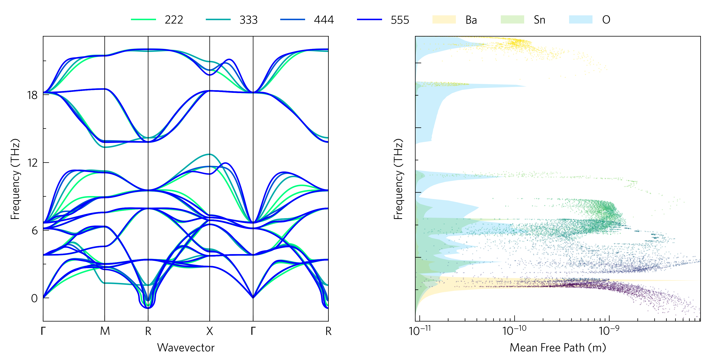

Tutorial-04: Layered Plots
As well as plotting graphs on neighbouring axes, it can be informative to plot them on the same axes to highlight links, for example how the mean free paths of phonons in BaSnO<sub>3</sub> dip where Ba has a strong contribution to the DoS, or how a phonon dispersion converges with supercell size. Although this can start to make scripts more complicated, and is not yet supported by the CLI, it is often worth the effort.
The python version of this code is:
1#!/usr/bin/env python3
2
3import tp
4
5scs = '222 333 444 555'.split()
6pfiles = ['../data/basno3/band-{}.yaml'.format(s) for s in scs]
7kfile = '../data/basno3/kappa-m363636.hdf5'
8dfile = '../data/basno3/projected_dos.dat'
9poscar = '../data/basno3/POSCAR'
10
11direction = 'avg'
12temperature = 300
13waterfall = 'mean_free_path'
14quantities = ['waterfall', waterfall]
15
16colour = 'winter_r'
17colours = {'Ba': '#ffcf06',
18 'Sn': '#59c605',
19 'O': '#00b1f7'}
20cmap = 'viridis'
21
22# You can ignore down to line 23!
23from os import path
24if not path.isfile(kfile) or (path.getsize(kfile) < 1024*1024*100):
25 raise Exception('File not found, please use get-data.sh in the folder above.')
26# Stop ignoring!
27
28# Axes
29fig, ax, add_legend = tp.axes.small.two_h()
30
31# Load
32dispersions = [tp.data.load.phonopy_dispersion(f) for f in pfiles]
33kappa = tp.data.load.phono3py(kfile, quantities=quantities)
34dos = tp.data.load.phonopy_dos(dfile, poscar=poscar)
35
36# Plot
37tp.plot.phonons.add_multi(ax[0], dispersions, colour=colour, label=scs)
38tp.plot.frequency.format_waterfall(ax[1], kappa, waterfall, direction=direction,
39 temperature=temperature, invert=True)
40tp.plot.frequency.add_dos(ax[1], dos, colour=colours, scale=True, main=False,
41 alpha=0.6, line=False, invert=True)
42tp.plot.frequency.add_waterfall(ax[1], kappa, waterfall, colour=cmap,
43 direction=direction, temperature=temperature,
44 invert=True)
45
46# Formatting
47
48tp.plot.utilities.set_locators(ax[1], x='log', y='linear')
49axlabels = tp.settings.labels()
50ax[1].set_xlabel(axlabels['mean_free_path'])
51ax[1].set_ylabel(axlabels['frequency'])
52add_legend()
53
54# Save
55fig.savefig('tutorial-04.png')
Axes (line 29)
Here we use two_h. h stands for horizontal, and there is a
corresponding vertical set of axes, two_v. They also come with
space for colourbars, by adding _colourbars to their names.
Load (line 32)
We need lists of files here, we’ve used list comprehensions to generate the file names and load them, but you could also use something like:
from glob import glob
pfiles = glob('band-*.yaml')
Although in that case, you would also need to define the labels.
Plot (lines 38-44)
add_dos and add_cumkappa have the arguments main and
scale, which enable them to be used on the same axes as plots with
other axis scales. main causes the axes ticks, labels and limits to
be set for the plot, so turning it off doesn’t interfere with the
current configuration. scale scales the data to the axes, rather
than the axes to the data, so everything is visible. If both main
and scale are set, the y-axis (or x, if invert) is scaled to
percent.
It can look better to have the waterfall plot above the DoS, but the
DoS should be scaled to the waterfall axes. Therefore, there is a
function, format_waterfall, which sets the scale without plotting
the waterfall plot. Running format_waterfall, then add_dos,
then add_waterfall solves this, however it doesn’t work properly if
line=True.
Formatting (lines 48-51)
Setting invert removes the y-axis labels and shortens the x-axis
one in anticipation of being a DoS-style set of axes, but this can be
reversed with some helper functions: set_locators sets the axis
scales and tick locators for each axis, and also has a DoS argument,
which removes the ticks and tick labels and the y axis label, while all
the default labels can be accessed with settings.labels. These will
be covered more in Tutorial-05.